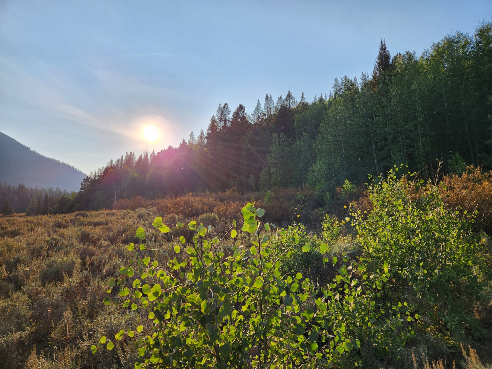
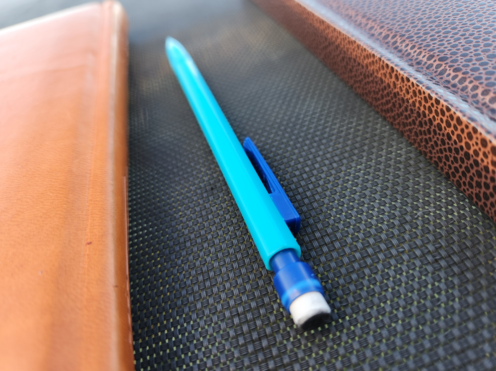
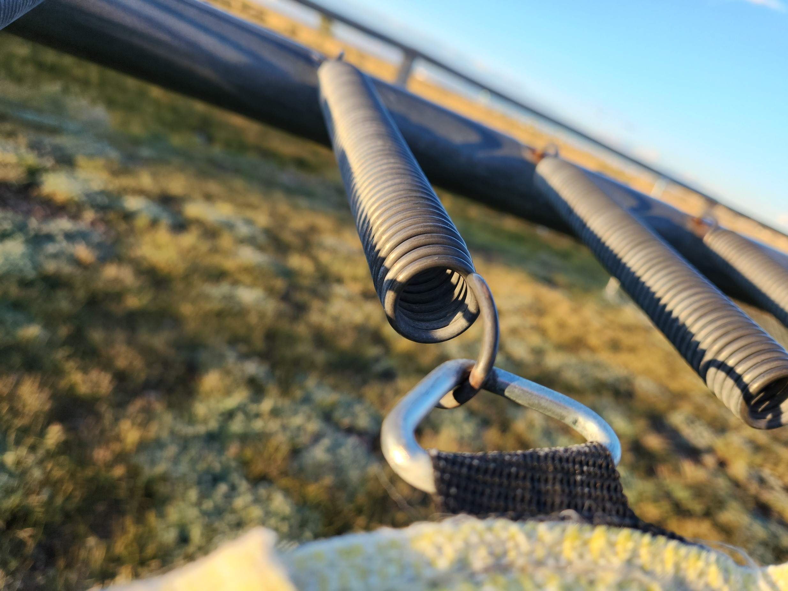

I n s p i r e d
I grew up in many different rural areas, from towns barely over 200 people, to cities of more than 20,000. What has really stuck with me through all these years is the influence of the countryside: the part that retains its peace.
- Mountains
- Adventure
- Exploration
E x p e r i e n c e d
Currently, I have a total of 0 years in the field, qualifying me for absolutely nothing. However, I have taken (am taking) a web development class which prepares me for what is to come. I could probably make you a website within the next five months. :)
- Talented
- Skilled
- Developed
C r e a t i v e
I believe my most shining characteristic is my creativity. I love to explore new concepts and seek further perspectives in many ways, especially with web design. I take knowledge from multiple places and make sure to give new ideas a try.
- Curious
- Motivated
- Revolutionary
Do you like flowers? Me too! View this video of flowers in the Wind River Range. (Totally not wasting space here)